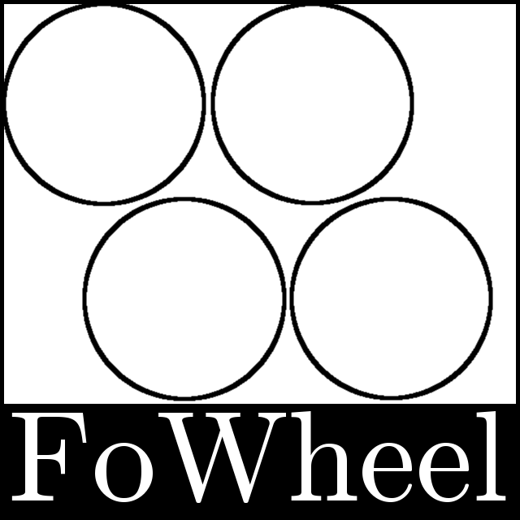
Team FoWheel
Spring 2015
EPICS-151
Section M&N
Crutches 4 Africa
284 S. Franklin St.
Denver, Colorado 80209 USA
17 April 2015
Dear Mr. Talbot,
Attached is the report for Team FoWheel’s response to your Build a Better Wheelchair
project. This report is based on the hazards encountered by wheelchair users in Africa and
addresses those hazards to the fullest extent possible. FoWheel was assigned this project on
7 January 2015.
This report explains the process FoWheel used to design a more effective wheelchair. Several
ideas were conceived as to upgrades which could be applied to the basic wheelchair design.
Through a decision matrix, we selected three modifications we could make. Each of these
modifications was dubbed a subsystem and further analyzed. This analysis included material
and cost breakdowns. Our three modifications address three distinct problems: traction,
safety, and carrying objects.
Our assembly instructions have been drawn rather than written in the hopes that they can
be sent to workers with limited or no English vocabulary without much revising. The rest of
the report, however, is meant for you and your evaluation of the design.
It has been an honor working on a project which could improve so many lives. We hope that
our design makes a difference.
Best Wishes,
Team FoWheel
Build a Better Wheelchair: Project Report
Colorado School of Mines, The FoWheel Team, Section M&N
Jack Rosenthal
Joseph Bales
jrosenth@mines.edu
jbales@mines.edu
Ilman Surghani
Robert Schreibman
Arbnol Sopaj
isurghan@mines.edu
rschreib@mines.edu
asopaj@mines.edu
17 April 2015
1 | Executive Summary
While wheelchairs may be common or in excess in the United States and other developed
countries, wheelchairs and many other mobility devices are less common in rural locations in
Africa. According to Disability Network Africa, one in four people have a mobility disability
in rural communities, and most of which are in need of a mobility device[1]. Additionally,
standard wheelchairs which are discarded in developed countries are unsuitable for the vari-
able terrain in Africa.
The FoWheel team has been tasked with implementing a wheelchair modification process to
improve donated wheelchair usability in rural African communities. Our team identified three
main flaws with current donated wheelchairs: lack of traction, risk of falling out, and carrying
liquids or supplies while simultaneously powering the chair. To address these issues, team
FoWheel has implemented three modifications to the current donated wheelchairs’ design:
the addition of mountain bike tires, a seatbelt, and a cup holder.
To address the issue of traction, our team has added mountain bike tires to our design. These
mountain bike tires wrap around the original wheelchair wheels. The tires can be removed
from old bicycles, or are available at low cost.
To allow the user to carry cups or other small objects, our team has implemented a foam
cup holder in our design. The foam cup holder is removable, making the addition a versatile
modification. The cup holder is a low cost addition of only cents per wheelchair.
To prevent the user from falling out of the wheelchair, and additionally provide the ability
to carry a variety of larger items, our design implements a seatbelt. The seatbelt secures
the user in the chair and attaches in a diagonal fashion similar to car seatbelts. The user
can secure larger items in their lap with the seatbelt, making this modification multipurpose.
The seatbelt costs only 0.70 USD per chair.
As the assemblers of this project may not be fluent in English, this report contains illustrated
installation instructions in addition to written instructions for each of our modifications.
As Crutches4Africa is a non-profit organization, our team’s primary goal in our design was to
keep the cost low. The total design costs a maximum of only 13.22 USD per wheelchair. Our
cost estimate is under the assumption that modifications will be preformed by volunteers;
however, this cost includes all materials should they need to be purchased. These retrofits
not only solve all aforementioned problems, but together are under the suggested budget of
50 USD and can be more effective than many commercial solutions.
i
Contents
1
Executive Summary
i
2
Introduction
1
2.1
Background Information . . . . . . . . . . . . . . . . . . . . . . . . . . . . .
1
2.2
Design Alternatives and Selection Process
. . . . . . . . . . . . . . . . . . .
1
2.3
Proposed Solution . . . . . . . . . . . . . . . . . . . . . . . . . . . . . . . . .
2
2.4
Report Organization . . . . . . . . . . . . . . . . . . . . . . . . . . . . . . .
3
3
Subsystems
4
3.1
Mountain Bike Tires . . . . . . . . . . . . . . . . . . . . . . . . . . . . . . .
4
3.1.1
Stakeholder and User Requirements . . . . . . . . . . . . . . . . . . .
5
3.1.2
Installation Manual . . . . . . . . . . . . . . . . . . . . . . . . . . . .
5
3.1.3
Materials
. . . . . . . . . . . . . . . . . . . . . . . . . . . . . . . . .
9
3.1.4
Cost Analysis . . . . . . . . . . . . . . . . . . . . . . . . . . . . . . .
9
3.1.5
Calculations . . . . . . . . . . . . . . . . . . . . . . . . . . . . . . . .
9
3.1.6
Relations to the Other Subsystems . . . . . . . . . . . . . . . . . . .
10
3.2
Seat Belt . . . . . . . . . . . . . . . . . . . . . . . . . . . . . . . . . . . . . .
10
3.2.1
Stakeholder and User Requirements . . . . . . . . . . . . . . . . . . .
10
3.2.2
Installation Manual . . . . . . . . . . . . . . . . . . . . . . . . . . . .
11
3.2.3
Materials
. . . . . . . . . . . . . . . . . . . . . . . . . . . . . . . . .
12
3.2.4
Cost Analysis . . . . . . . . . . . . . . . . . . . . . . . . . . . . . . .
12
3.2.5
Relations to the Other Subsystems . . . . . . . . . . . . . . . . . . .
13
3.3
Cup Holder . . . . . . . . . . . . . . . . . . . . . . . . . . . . . . . . . . . .
13
3.3.1
Technical Specifications
. . . . . . . . . . . . . . . . . . . . . . . . .
13
3.3.2
Stakeholder and User Requirements . . . . . . . . . . . . . . . . . . .
14
3.3.3
Relations to the Other Subsystems . . . . . . . . . . . . . . . . . . .
14
ii
Bibliography
17
List of Figures
2.1
The Decision Matrix . . . . . . . . . . . . . . . . . . . . . . . . . . . . . . .
2
3.1
A Standard Unmodified Wheelchair . . . . . . . . . . . . . . . . . . . . . . .
4
3.2
Standard Wheel Sizes and Dimensions
. . . . . . . . . . . . . . . . . . . . .
6
3.3
Detaching wheels from wheelchair by removing hex bolt . . . . . . . . . . . .
6
3.4
Removing both wheels from wheelchair body . . . . . . . . . . . . . . . . . .
7
3.5
Inserting bike tires on the inside of the wheels . . . . . . . . . . . . . . . . .
7
3.6
Wrapping tires over the wheels . . . . . . . . . . . . . . . . . . . . . . . . . .
8
3.7
Replacing the hex bolt and installing the wheels . . . . . . . . . . . . . . . .
8
3.8
Rope Dimensions for the Seatbelt . . . . . . . . . . . . . . . . . . . . . . . .
11
3.9
Seatbelt Assembly
. . . . . . . . . . . . . . . . . . . . . . . . . . . . . . . .
12
3.10 Illustrated Assembly for the Cup Holder . . . . . . . . . . . . . . . . . . . .
15
3.11 Cupholder 3D Sketch with Dimensions . . . . . . . . . . . . . . . . . . . . .
16
List of Tables
3.1
Cost Analysis for Mountain Bike Tire Tread Installation
. . . . . . . . . . .
9
3.2
Cost Analysis for the Seatbelt . . . . . . . . . . . . . . . . . . . . . . . . . .
13
3.3
Cup Holder Cost Analysis . . . . . . . . . . . . . . . . . . . . . . . . . . . .
14
iii
2 | Introduction
In January of 2015, the FoWheel team was presented with a project by Crutches4Africa.
Current donated wheelchairs brought to local communities in Africa are unsuitable for use
in rough terrain, and do not meet the needs of the users, caregivers, and other involved
stakeholders. Team FoWheel brings a design based off of retrofitting donated wheelchairs to
better meet the needs of the stakeholders.
The purpose of this report is to explain how to implement team FoWheel’s retrofit designs
onto wheelchairs. Additionally, this report explains the team’s thought processes behind our
design, and analyzes the effectiveness in correcting bugs found with current wheelchairs used
in rural Africa.
2.1
Background Information
The earliest wheelchair design that resembles modern day wheelchairs was invented in 1919,
by Herbert Everest[2]. Everest was a mining engineer who invented the modern wheelchair
after breaking his back in a mining accident[2]. This was the first automobile friendly design
with a fold-up feature that made the chair compact and portable. Wheelchairs have brought
mobility to many since then; however, some rural communities in Africa have only recently
started to receive mobility devices. Additionally, the rough terrain in many areas makes
wheelchairs impractical. Various off-road and all-terrain wheelchairs have been invented and
are commercially available in developed countries[3][4][5]. These off-road wheelchairs are
expensive however, and unavailable to the communities that need them in Africa.
2.2
Design Alternatives and Selection Process
Our design was chosen using a decision matrix that evaluated the adaptations based on
overall usefulness, practicality, and cost. The decision matrix, as seen in Figure 2.1 shows
our process in selecting our design. We also selected a secondary design, also seen in the
matrix.
Our design implementation emphasizes using readily available materials in local communities
in Africa that are either recycled or of low cost. As some local communities in Africa have a
1
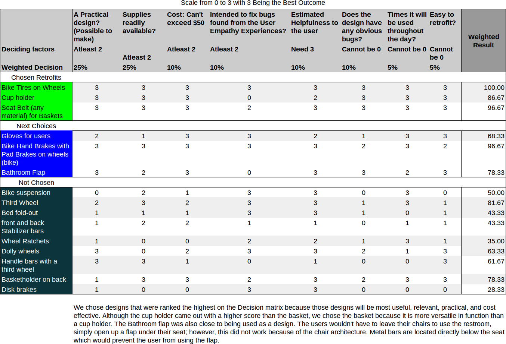
Build a Better Wheelchair: Project Report
The FoWheel Team
Figure 2.1: The Decision Matrix
limited availability of tools, all of our adaptations are able to be retrofitted with simple tools
such as a screwdriver and an adjustable wrench.
The primary stakeholder for this project is the end user. Our team identified the major
problems faced by the end user as:
• Slipping when rotating the wheels on low friction surfaces
• Difficulty carrying objects when the hands are occupied rotating the wheels
• Falling out of the wheelchair
2.3
Proposed Solution
To properly address these problems, our team created three subsystems within our wheelchair
retrofit design. These subsystems are:
• Mountain bike tires to provide better ground traction
• A safety strap to prevent the user from falling out of their wheelchair, that can addi-
tionally be tied to large objects to carry
2
Build a Better Wheelchair: Project Report
The FoWheel Team
• A cup holder that can be used to carry water or smaller objects
Our design also considers the local community members who will be preforming the modifi-
cations and maintaining wheelchairs as a stakeholder. These community members may not
be fluent in English, and such our team provides illustrated instructions that are included
in this report. Additionally, detailed installation instructions are provided in English text to
help clarify the installation process to English speakers.
2.4
Report Organization
The remainder of this report will be divided into three subsystem reports, including de-
tailed specifications, installation instructions, relevant calculations, a cost analysis for each
subsystem, and relevant diagrams.
3
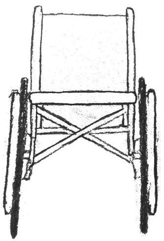
3 | Subsystems
3.1
Mountain Bike Tires
In uneven terrain commonly found in rural Africa, maneuvering on an unmodified donated
wheelchair like the one shown in Figure 3.1 can be difficult. This is mainly caused by the
lack of traction between standard wheelchair wheels and low friction surfaces, such as dirt.
To address this problem, our design features retrofitted mountain bike tires modified to be
installed on a standard wheelchair. As mountain bike tires are designed for off-road terrain,
they make the perfect candidate for incorporation into our design. Mountain bike tires make
more contact with the ground than slick tires (like road bike tires), and thus more friction is
created[6].
Figure 3.1: A Standard Unmodified Wheelchair
4
Build a Better Wheelchair: Project Report
The FoWheel Team
3.1.1
Stakeholder and User Requirements
The mountain bike tire subsystem addresses user and stakeholder needs by improving the
quality of life of the end user. The addition of mountain bike tires extends the user’s range
of mobility. Locations that may have been inaccessible with an unmodified wheelchair may
become more accessible with the mountain bike tires. In addition, caregivers will be able to
maneuver the user more easily on rough terrain, reducing the work required for simple tasks.
The addition of mountain bike tires to the wheels extends the life of the wheels, and as a
result, extends the life of the wheelchair. This directly addresses client concerns of wheelchair
life in variable terrain.
3.1.2
Installation Manual
In addition to the illustrated installation instructions, the FoWheel team provides the fol-
lowing instructions. The installation process takes roughly 30 minutes to 2 hours.
To install the bike tires:
1. Find bike tires that are slightly larger than the wheelchair wheels. Before you take the
wheels off of the old bike, make sure the bike tires are deflated.
2. Figure 3.2 shows the diameter of the bike tire is 66 cm and the width is 5 cm, while
the wheelchair wheel has a diameter of 61 cm with a width of 3.05 cm.
3. The best way to put the tires on the wheelchair is to first unscrew the wheels and
separate them from the wheelchair. To do this, remove the center cap on the wheelchair
wheels to access the hex bolt as shown in Figure 3.3
4. Use an adjustable wrench to remove the hex bolt.
5. Figure 3.5 shows the correct side the tire should be placed on the wheelchair wheel.
It is easier to put the tire onto the wheelchair wheel starting on the side of the wheel
opposite of the handle bars. If the tire is a snug fit, make sure to use a solid piece of
metal like a screwdriver to carefully stretch the tires onto the wheels.
6. Afterwards, screw the wheels back onto the chair.
To remove the bike tires, follow the instructions in reverse.
5
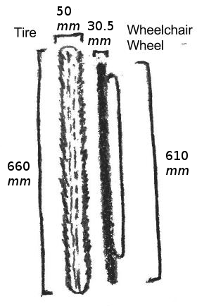
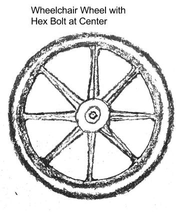
Build a Better Wheelchair: Project Report
The FoWheel Team
Figure 3.2: Standard Wheel Sizes and Dimensions
Figure 3.3: Detaching wheels from wheelchair by removing hex bolt
6
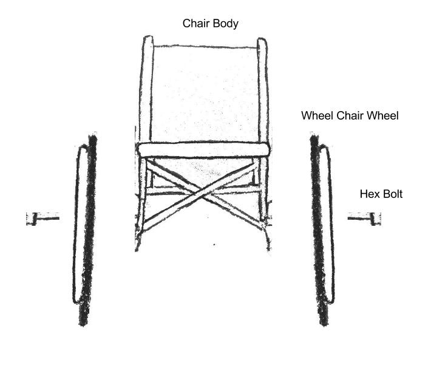
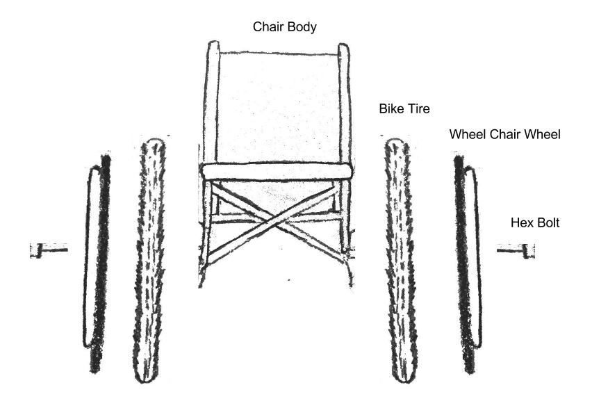
Build a Better Wheelchair: Project Report
The FoWheel Team
Figure 3.4: Removing both wheels from wheelchair body
Figure 3.5: Inserting bike tires on the inside of the wheels
7
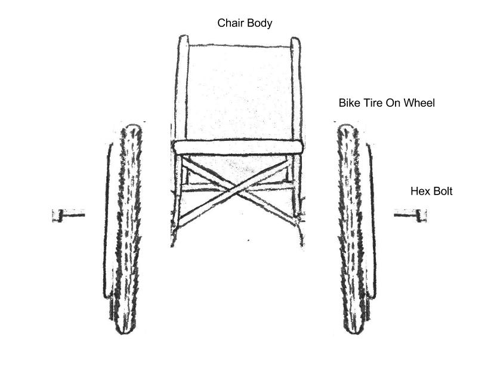
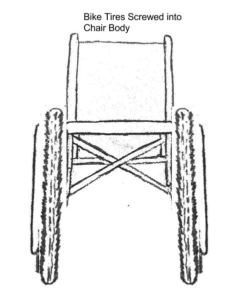
Build a Better Wheelchair: Project Report
The FoWheel Team
Figure 3.6: Wrapping tires over the wheels
Figure 3.7: Replacing the hex bolt and installing the wheels
8
Build a Better Wheelchair: Project Report
The FoWheel Team
3.1.3
Materials
The following materials are required to install the mountain bike tire treads:
• Mountain Bike Tire Treads
• Adjusting Wrench - For loosening and tightening any size hex bolt from the wheelchair
wheels.
• Screwdriver - Used to edge the tire onto the wheelchair wheel.
3.1.4
Cost Analysis
Table 3.1 shows the cost of the parts for this subsystem, as well as the estimated total cost
of the subsystem. The table also provides the preferred dimensions for the mountain bike
tires.
Table 3.1: Cost Analysis for Mountain Bike Tire Tread Installation
Description
Estimated Cost
Mountain Bike Tire Treads
12.00 USD[7]
66 cm diameter, 5 cm width
Labor Costs
0.00 USD1
Estimated Subsystem Cost
12.00 USD
The intention of our design is to use recycled bicycle parts rather than purchasing new parts.
However, Table 3.1 shows the cost of the parts should they be unavailable.
3.1.5
Calculations
The amount of surface area touching the ground can be calculated:
Standard Wheelchair Wheels
widthwheel = 3.05 cm
rwheel = 61 cm
S.A.wheel = 2π × rwheel × widthwheel = 1160 cm2
1Assuming volunteer labor
9
Build a Better Wheelchair: Project Report
The FoWheel Team
Mountain Bike Tires Added
widthtire = 5.0 cm
rtire = 66 cm
S.A.tire = 2π × rtire × widthtire = 2073 cm2
With the retrofitted bike tires, there is nearly twice as much wheel surface area now making
contact with the ground giving the user twice as much more stability and control over their
wheelchair.
3.1.6
Relations to the Other Subsystems
As the seatbelt is installed within close proximity to the bike tires, the seatbelt placement
must not interfere with the wheels or the bike tires. Additionally, as the bike tires provide
a significant amount of additional traction, the user may be more inclined to participate in
potentially dangerous activities. Additionally, the seatbelt must have the safety features to
accommodate for potentially dangerous activities.
Both the seatbelt and the cup holder provide storage area for items while the user is operating
the wheels.
3.2
Seat Belt
Many modern devices, like cars, in which a user is in motion, contain seat belts. Seat belts
are a proven method to protect a user’s safety in motion[8]. In the unpredictable terrain of
rural communities in Africa, a seatbelt can protect a user from injury.
Our design implements a seatbelt not only to protect the user, but also to assist the user in
carrying larger objects in their lap. The seatbelt can strap around these objects to allow the
user to operate the wheels while concurrently carrying items.
3.2.1
Stakeholder and User Requirements
The seatbelt helps reduce risk of injury when using the wheelchair. The wheelchair user can
safely maneuver through inclines and rocky terrain without slipping out of the seat. During
our user empathy tests, we found getting in and out of the wheelchair to be a difficult task.
With the seatbelt:
• The wheelchair user will not fall out of the chair and have to lift themselves back,
saving time and energy.
10
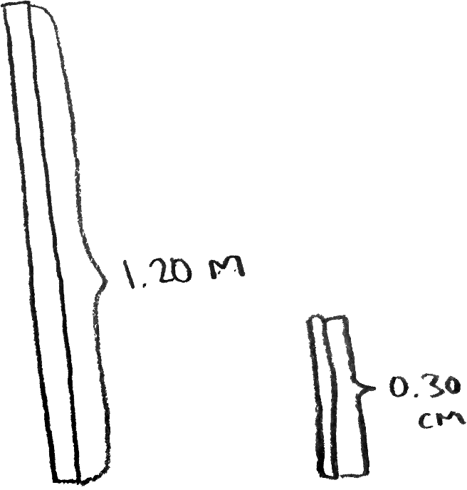
Build a Better Wheelchair: Project Report
The FoWheel Team
• Caregivers will be able to move the wheelchair without injuring the user.
• Locals responsible for installing the seatbelt can easily be taught the strongest types
of knots in order to ensure maximum safety.
• The seatbelt is a lightweight addition with all materials available locally, removing
extra weight for distributors.
3.2.2
Installation Manual
In addition to our illustrated instructions, the FoWheel team provides the following installa-
tion instructions. The installation process will take approximately 5 minutes.
To install the seatbelt:
1. Measure out two pieces of rope or similar material, one of 120 cm, and another of 30
cm.
2. Taking the shorter piece, tie two tight loops on both ends.
3. Take one loop, place the loop over one of the handles of the wheelchair.
4. Taking the longer piece, attach it to the opposite side of the wheelchair.
5. Take the loose end of the long rope and pull the rope through the other loop.
Figure 3.8: Rope Dimensions for the Seatbelt
11

Build a Better Wheelchair: Project Report
The FoWheel Team
Figure 3.9: Seatbelt Assembly
3.2.3
Materials
In order to install the seatbelt, the following materials are required:
• Rope or similar material – To use as the seatbelt
• Scissors or a knife – To cut the rope with
• Measuring tape – To get precise rope measurements
Additionally, fastening points on the wheelchair for the rope can be attached will be required
to install a seatbelt.
3.2.4
Cost Analysis
Table 3.2 on the next page shows the cost estimation for the installation of a seatbelt on a
wheelchair.
12
Build a Better Wheelchair: Project Report
The FoWheel Team
Table 3.2: Cost Analysis for the Seatbelt
Description
Quantity
Estimated Cost
120 cm long rope
Seatbelt
0.70 USD
30 cm short rope
Labor costs
5 min
0.00 USD1
Estimated cost per chair
0.70 USD
3.2.5
Relations to the Other Subsystems
The addition of the bike tires allow for the user to travel over rocky or uneven terrain. By
travelling over such dangerous terrain, a seatbelt is necessary to ensure the user’s safety.
3.3
Cup Holder
One of the challenges a wheelchair user faces is carrying objects while having to propel the
chair. In order to solve this problem, we have installed a carrying mechanism: a cup holder.
This subsystem consists of a foam cup holder attached to the top of the arm of the wheelchair
with duct tape. The cup holder allows the user to carry small objects without the need to
use their hands, freeing them to spin the drive wheels.
3.3.1
Technical Specifications
This subsystem must be attached firmly so the cup holder does not slide sideways and end
up under the chair arm. The cup holder is created using a foam cup holder, scissors, and a
roll of tape (duct tape is used here). The scissors are used to cut a slit in two opposite sides
of the cup holder, slits long enough to fit the tape through. A portion of the tape should be
folded over upon itself so the tape does not stick to the cup holder while attached. The tape
is then pushed through the cup holder so the folded over portion sticks out the opposite end
and the sticky side is still on the original side. The cup holder is then taped tightly to either
1Assuming volunteer labor
13
Build a Better Wheelchair: Project Report
The FoWheel Team
arm of the chair.
Table 3.3: Cup Holder Cost Analysis
Description
Quantity
Estimated Cost
Foam Cup Holder
1
0.27 – 0.52 USD[9]
Scissors
1 per worker
Negligible
Duct Tape of ≤ 50 mm width
∼ 250 mm
0.01 USD1
Labor Cost
∼ 1 min
0.00 USD2
Estimated cost per chair
0.28 – 0.53 USD
3.3.2
Stakeholder and User Requirements
This subsystem addresses the concern of users ability to carry objects. It gives them a
convenient place to carry small objects.
During the user empathy activities and the client’s presentation, this topic appeared often.
People in Africa are expected to provide for themselves as much as possible, and being able
to carry necessary objects or fluids reliably is a step in that direction. Often, wheelchair
users place objects in their laps to carry them. They cannot usually grip these objects, as
they must use their arms to move the wheelchair. This is especially common with very large
or very small objects. The cup holder addresses the problem of carrying small objects.
3.3.3
Relations to the Other Subsystems
The cup holder works with the seat belt to allow for carrying objects. While the cup holder
allows the user to carry small objects, the seat belt allows the user to carry larger objects.
Together, these subsystems solve the problem as completely as possible.
1The labor cost per chair is negligible as this will be done by volunteers.
2The cost of tape per chair was determined by finding the cost of a roll of 18288 mm of duct tape
(∼3.50 USD[10]) and applying this to an estimated length per chair. This length was intentionally overesti-
mated.
14
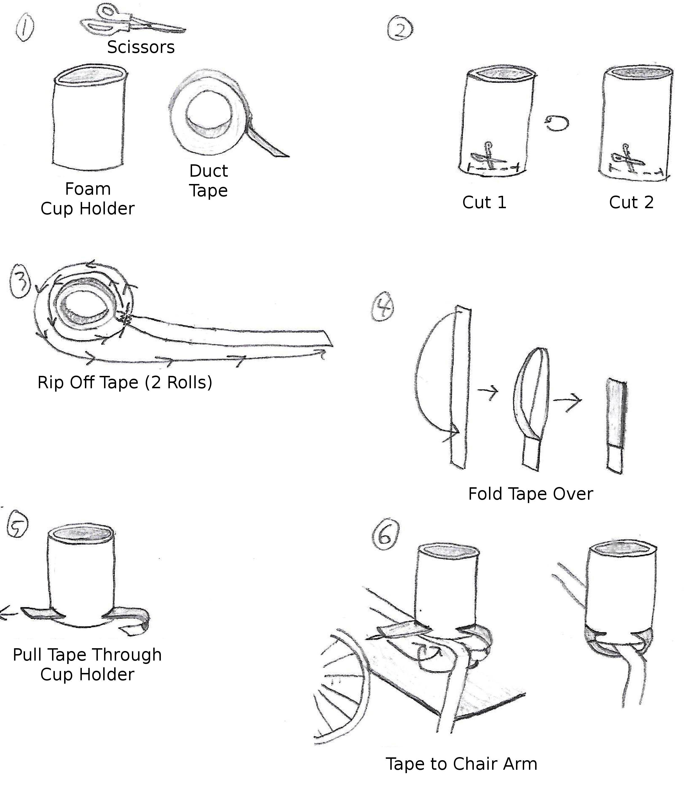
Build a Better Wheelchair: Project Report
The FoWheel Team
Figure 3.10: Illustrated Assembly for the Cup Holder
15
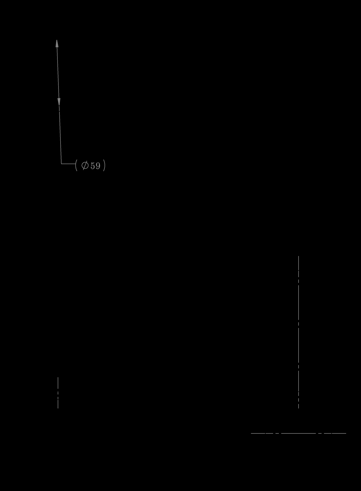
Build a Better Wheelchair: Project Report
The FoWheel Team
Figure 3.11: Cupholder 3D Sketch with Dimensions
Dimensions calculated using standard can sizes[11] using large tolerance
16
Bibliography
[1]
C. Talbot. (2013). Disability frequencies in african communities, Disability Network
Africa, [Online]. Available: http://www.disabilitynetworkafrica.org/.
[2]
N. Kleinfield, “Wheelchair maker vs. critics,” The New York Times, Feb. 12, 1981.
[Online]. Available: http://www.nytimes.com/1981/02/12/business/wheelchair-
maker-vs-critics.html.
[3]
S. Oxford, “All-terrain wheelchair,” US Patent 5,149,118, Sep. 1992. [Online]. Available:
https://www.google.com/patents/US5149118.
[4]
J. Wilmot, “Off-road wheelchair,” US Patent App. 11/185,583, Jan. 2007. [Online].
Available: https://www.google.com/patents/US20070018443.
[5]
J. Wilmot and M. Meissner, “Off-road wheelchair device with suspension,” US Patent
7,934,740, May 2011. [Online]. Available: https : / / www . google . com / patents /
US7934740.
[6]
J. Spadaccini. (1998). The wheel science of cycling, Exploratorium: The Museum of
Science, Art, and Human Perception, [Online]. Available: http://www.exploratorium.
edu/cycling/wheel3.html.
[7]
(2014). Panaracer smoke classic bmx tire, Performance Bicycle, [Online]. Available:
http : / / www . performancebike . com / bikes / Product _ 10052 _ 10551 _ 1035329_ -
1_400238__400238.
[8]
R. J. Fedorowicz, “Seat belts save lives,” Hospital Aviation, vol. 4, no. 12, p. 12, 1985.
doi: doi:10.1016/S0740-8315(85)80177-7.
[9]
(Apr. 2015). Foam cup holder, Alibaba.com, [Online]. Available: http://www.alibaba.
com/product-detail/foam-cup-cover-heat-insulation-tin_1180664190.html.
[10]
(Apr. 2015). Duck brand duct tape, 1.88in x 20 yard, Wal-Mart, [Online]. Available:
http : / / www . walmart . com / ip / Duck - Brand - Duct - Tape - 1 . 88 - x - 20 - yard -
Blue/15077955.
[11]
(2013). Cans: Our sizes and pricing, Rexam, [Online]. Available: http://www.rexamcatalogue.
com/files/1986892/1997262-THACJJTZ/Sections/1992984.pdf.
17